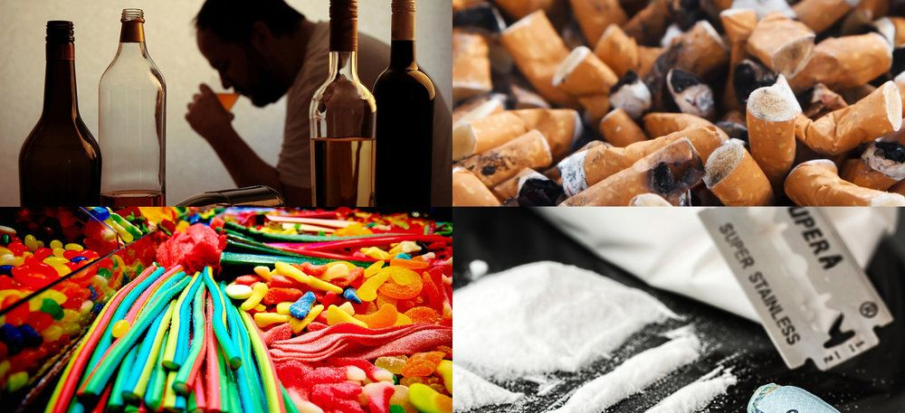

Los adolescentes pueden estar comprometidos en varias formas con el alcohol y las drogas legales o ilegales. Es común el experimentar con el alcohol y las drogas durante las adolescencia. Desgraciadamente, con frecuencia los adolescentes no ven la relación entre sus acciones en el presente y las consecuencias del mañana. Ellos tienen la tendencia a sentirse indestructibles e inmunes hacia los problemas que otros experimentan.El uso del alcohol o del tabaco a una temprana edad aumenta el riesgo del uso de otras drogas más tarde. Algunos adolescentes experimentan un poco y dejan de usarlas o continúan usándolas ocasionalmente sin tener problemas significativos. La adolescencia es el tiempo de probar cosas nuevas. Los adolescentes usan el alcohol y las otras drogas por varias razones, incluyendo la curiosidad, para sientirse bien, para reducir el estrés, para sentirse personas adultas o para pertenecer a un grupo. Es difícil el poder determinar cuáles de los adolescentes van a experimentar y parar ahí, y cuáles van a desarrollar problemas serios. Otros desarrollarán una dependencia, usarán luego drogas más peligrosas y se causarán daños significativos a ellos mismos y posiblemente a otros. Los adolescentes que corren el riesgo de desarrollar problemas serios con el alcohol y las drogas incluyen aquellos:
-Con un historial familiar de abuso de substancias
-Que están deprimidos
-Que sienten poco amor propio o autoestima
-Que sienten que no pertenecen y que están fuera de la corriente
 La causa exacta del consumo de drogas se desconoce. Los genes de una persona, la acción de las drogas, la presión de compañeros, el sufrimiento emocional, la ansiedad, la depresión y el estrés ambiental pueden ser todos factores intervinientes.
Muchas personas que desarrollan un problema de consumo de sustancias tienen depresión, trastorno de déficit de atención, trastorno de estrés postraumático u otro problema de salud mental. Un estilo de vida estresante y caótico y la baja autoestima son también comunes.
Es posible que los niños que crezcan viendo a sus padres consumiendo drogas tengan un mayor riesgo de presentar un problema de consumo de sustancias más adelante en la vida tanto por razones ambientales como genéticas. Hay varias etapas del consumo de drogas que pueden llevar a la adicción. Las personas jóvenes parecen pasar más rápidamente a través de las etapas que los adultos. Las etapas son:
+Consumo experimental: típicamente involucra a los compañeros, se hace para uso recreativo; el consumidor puede disfrutar del hecho de desafiar a los padres u otras figuras de autoridad.
+Consumo regular: el consumidor falta cada vez más a la escuela o al trabajo; le preocupa perder la fuente de droga; utiliza las drogas para "remediar" sentimientos negativos; empieza a apartarse de los amigos y la familia; puede cambiar los amigos por aquellos que son consumidores regulares; muestra aumento de la tolerancia y capacidad para "manejar" la droga.
+Consumo problemático o riesgoso:el consumidor pierde cualquier motivación; no le importa la escuela ni el trabajo; tiene cambios de comportamiento obvios; pensar acerca del consumo de drogas es más importante que todos los otros intereses, incluso las relaciones interpersonales; el consumidor se torna reservado; puede comenzar a vender drogas para ayudarse a sostener el hábito; el consumo de otras drogas más fuertes puede aumentar; se pueden incrementar los problemas legales.